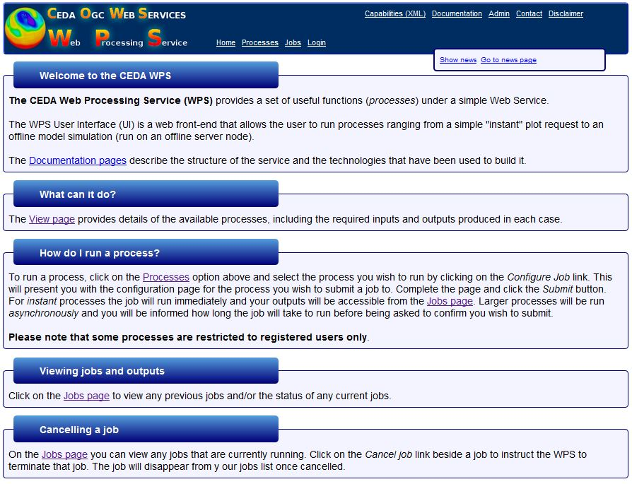

CEDA WPS User Guide for extracting MIDAS data and metadata, as well as other CEDA datasets
User Guide content
The data for each of the MIDAS data types is stored in the Met Office MIDAS Surface data directories in yearly files. These files are large and as a result can be difficult to work with.
The CEDA WPS is available for your use, so that you can extract data and metadata from specific areas.
Things to know before using the WPS
- Access restrictions:
In order to use the CEDA WPS, you must be registered with the BADC (new users should register here). In addition to this, to access selected processes (e.g. MIDAS, HadISST), registered users must also be granted access to the dataset by completing the online application (for MIDAS, the online application is available here. If you have forgotten your password, please email CEDA Support.
- WPS Data Output files availability:
The extracted data will be available through the WPS.
- WPS Data Output file format and units:
The format and units are as outlined in the tables information.
 Web Guide on How to import a text file to Excel.
Web Guide on How to import a text file to Excel.
If you intend to import the text file into Excel, please remember that MS Excel is limited to 65,536 rows of data. If the data file is too large, data
will be cropped to fit. Use MS Access if you need to open a large file.
- How to find MIDAS Weather stations:
- The MIDAS database is downloaded monthly from the Met Office to the BADC. The most recent available data for most tables will be for the previous month.
- Browser compatibility:
The CEDA WPS has been tested with the following browsers:
- Firefox 3+
- Chrome 10+
- Internet Explorer 8
If you test the CEDA WPS in other browsers and it works, please let CEDA Support know.
Update 31/03/2014: Some issues have been reported using the WPS in the latest versions of Chrome and Internet Explorer. We recommend that you use Firefox.
- Bugs and future developments:
If you discover a problem with the CEDA WPS service please notify CEDA Support.
When reporting a problem please include the following information:
- The browser you use (please include the browser version).
- The page the bug occurred on. Give the title of the page as it appears in the browser window title.
- The nature of the problem.
- Any error messages.
Please note that the CEDA WPS service is continuously being developed. The following list gives the improvements that will be made in the future:
- availability of output files via the BADC user requested data area
- reset button on BBox map
- Providing links to user guides for each process on the job submission page
- Providing long names for options on submission form (such as .Hourly Weather. instead of .WH.)
- Allow users to submit multiple requests by pasting in WPS request URLs directly (without using the submission form) - this could be very handy for users who need to do repeat requests when only changing the date (or some other parameter).
If you think anything should be added to the list, please contact CEDA Support.
Extracting MIDAS Data via the WPS
Follow this link to the CEDA WPS Home page.
About the CEDA WPS Home page

On the home page, you can find summaries briefly highlighting what CEDA WPS is, What it can do, How to run a process, how to view jobs and outputs and how to cancel a job.
Also on this front page and available throughout all CEDA WPS website pages is the top menu bar with direct links to Home, Processes, Jobs, Login as well as News. You can also find a contact link on this menu bar on the right-hand side.
CEDA WPS can be used to extract MIDAS data for one or more weather stations at a time (ExtractUKStationData process). Choose to extract data for a whole county, area or individual named station(s), by src_id.
The WPS can also be used to generate a list of stations (GetWeatherStations process).
Note that all job processes currently available under the WPS are detailed under the "Processes" in the top menu bar (left side). As the service develops, additional processes will be described on this "Processes" page.
Procedure to extract MIDAS data or a station list via CEDA WPS:
The procedure is straightforward and in 4 steps, as follows:
- login
- How to submit a job (select, configure and submit your process)
- download the job outputs
- logout
Details to successfully complete each step in this procedure are given below.
-
- click on the login link in the top menu bar.
- Enter your Open-ID, immediately after the last forward slash (Note that open-ID and BADC account name are different. If you don't know your Open-ID or you don't remember it, then you can find it on your MyBADC page).
- If you reach the BADC login page, please enter your BADC credentials (i.e. account name and associated password).
- On the next screen, please click on "yes"
- You should now be logged in and in the top menu bar, you should now see your OpenID and a link to "logout"
Submit a job
To start submiting a job to extract some data via the WPS, follow the link to "Processes" on the top menu bar.
At this stage, you can either scroll down the page until you find the job process of interest or you can filter the list by entering a keyword (e.g. station to find the 2 job processes associated to the MIDAS data: ExtractUKStationData to extract MIDAS data (as explained below in Section A) or GetWeatherStations to generate a stations list (see Section B below for details).
Section A: ExtractUKStationData or How to submit a job to extract MIDAS UK station data:
- select job process of interest:
Simply click on the job process title bar or follow the link to "submit a request" on the job process title bar.
Note that if you are not already logged in, you will be asked to login at this stage.
- Define your inputs page:
You shoud now see a page entitled "Define your inputs". This is the page where your define your criteria to extract the data of interest.
Fields to be defined are:
- Information about your asynchronous job
You should now see a page which gives you details about your job (Information about your asynchronous job page) and in particular the estimated duration and estimated volume.
Click on the Submit button to run the job and extract the data as per your request. Upon submitting your job, the server will be contacted and you should then see a monitoring page with your job details (Job: job id number page).
- Monitoring your job: job id number page
As your job is running on the server, the monitoring page shows your job details, and eventually below the job details, your job output files will be listed (you should see a link to download a zip file containing all the text/csv files listed below). Note that the job id page will continue to poll offline jobs when they are running unless you click the "stop polling" option when it is visible.
IMPORTANT NOTE: Immediately after you have confirmed to run your job (after step 3), you can either log out or submit another job while the job you just submitted is running. At this point, your job has been submitted to run offline on the server. Please note that offline jobs are scheduled and may take a long time to run. You will receive an e-mail when your offline job has run so you do not need to stay on this page i.e. you may submit additional jobs. Note that you can view all previous jobs and the status of those jobs currently running on the Jobs page (link on the menu bar). This page lists all the jobs (in the lower part) you have submitted to the WPS. The upper part of the page allows you to quickly find a specific job.
Section B: GetWeatherStations or How to submit a job to generate a MIDAS station list
The GetWeatherStations process allows you to generate a list of matching stations (station numbers refered to as SRC_ID in MIDAS) upon selecting various parameters e.g. station opening and closure times (start and end times), within a specific geographical area as defined by coordinates (BBox), or within selected counties and by DataTypes (refered to as ID types in MIDAS) , e.g. RAIN for all raingauge stations.
Please note that BBox, Counties and Data Types are optional selections.
Once the station list has been extracted, you will have the option of using the generated station list to extract associated weather data via the ExtractUKStationData process.
- select job process of interest:
On the "Processes" page, either scroll down the page to find and select "GetWeatherStations" or filter the listing with keyword station. Then click on the job process title bar or follow the link to "Submit a request".
Note that if you are not already logged in, you will be asked to login at this stage.
- Define your inputs page:
You shoud now see a page entitled "Define your inputs". This is the page where your define your criteria to extract the data of interest.
Fields to be defined are:
- startdatetime - the starting date from which you need the matching station list.
- enddatetime - the end date of your time period of interest
Optional fields are:
- BBOX: Either enter latitude and longitude details for the individual station or for a bounding box surround
ing the location you interested in OR draw a bounding box (only UK areas at present) OR Counties: Select the county(ies) that you want data for.
- DataTypes: Select the DataType from the drop-down list (optional):
- CLBD
- CLBN
- CLBR
- CLBW
- DCNN
- FIXD (Fixed station)
- ICAO
- LPMS (Long Period Met Station)
- RAIN
- SHIP (Marine Surface Obsrvations)
- WIND
- WMO
- Then click on the Submit button.
- Information about your asynchronous job
You should now see a page which gives you details about your job (Information about your asynchronous job page) and in particular the estimated duration and estimated volume.
Click on the Submit button to run the job and extract the data as per your request. Upon submitting your job, the server will be contacted and you should then see a job monitoring page with your job details (Job: job id number page) and eventually your output files below the job details. At this stage, your job is running asynchronously so you may log out or submit another data extraction job. You will receive an e-mail when your offline job has run. Note that you can view all previous jobs and the status of those jobs currently running on the Jobs page (link on the menu bar). This page lists all the jobs (in the lower part) you have submitted to the WPS. The upper part of the page allows you to quickly find a specific job.
To cancel a job after having submitted it , you may either follow the link to "cancel this job" on the server polling page or you can follow the link to "cancel this job" from the Jobs details page (in the table "action" clolumn). Please note that you should only click once and wait to see a confirmation message on screen. You may experience a delay between the time you click on the Cancel link and the display of the confirmation message on screen. Then hit the back button and go to Jobs. The STATUS of your job should now show as "FAILED".
IMPORTANT NOTE: Under the View job info/Outputs page, under the job details section - Job Capabilities, you are given the option to use the station list to extract the associated UK weather data. Simply follow the link which will take you to the ExtractUKStationWeather job process selection page and make your selection as explained in Section A above.
-
Under the Processeses tab, you will find a list of processes available including the "Subsetter process".
The Subsetter process is a subsetting tool that allows the extraction of variable subsets from a range of datasets. The user can select a dataset, a single variable, time range and bounding box. The output format can also be selected (NetCDF or CSV) along with instructions on how to divide output files into sensible time chunks. The tool uses CDAT's CDMS (Climate Data Management System) libraries to interact with the datasets in the archives. The extraction jobs run on the batch processing servers and the user is e-mailed when the job has completed.
Datasets currently available under the Subsetter Process are:
Full documentation on the Subsetter tool is available at: http://wps-web1.ceda.ac.uk/docs/cows_wps/supported_procs/subsetter_process.html
Download the job outputs
You will receive an e-mail when your offline job has run. To find your job outputs, either follow the link provided in the email message or go to Jobs (top menu bar). This page lists all the jobs (in the lower part) you have submitted to the WPS. The upper part of the page allows you to quickly find a specific job. To find your job outputs, follow the job associated link to View job info/outputs. The View job info/outputs displays the job details in the upper part and list the output files in the lower part of the page.
Logout:
Once you have submitted all your data extraction jobs, you should logout by simply clicking on the logout link on the top menu bar.
Who to Contact
The WPS is still work in progress. If you have queries about it or about obtaining the MIDAS surface stations data from the BADC then you should contact CEDA Support. Your query should be answered within one working day. When follow-up work is required, the CEDA Support will carry out the work as quickly and efficiently as possible, and in any case, the user will be kept informed of
progress.